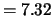
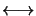
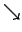

The basic objective in machine vision is to give the machine a sense of vision, that is to use visual sensors for such tasks as detection and recognition of objects, tracking of objects, avoiding obstacles, navigation, and perhaps reasoning! Since the work of Marr [75] a generally accepted view is to consider a vision system as an information processing system which has a two level hierarchical structure. The first level is referred to as early vision and the second level as high-level vision (see Table 1.1). Typical early vision modules are, edge detection, texture, segmentation, shape, surface discontinuities, stereo disparity, depth, color, motion; while high-level vision modules are recognition, vision based navigation, tracking, scene understanding, image interpretation.
Early vision modules are assumed to operate relatively independently, and then the information provided by these modules is integrated to solve the high-level vision problem. More recently the relative independence of early vision modules is being questioned, and the scenario emerging is that there is considerable interaction between these modules (modular integration).
Early vision problems can be viewed as problems of recovering 3-D surface properties (for example depth) form 2-D observations (for example intensity images); thus vision problems can be regarded as problems in inverse optics. Most inverse problems are ill posedill-posed, namely (a) solution may not exist, or (b) solution may not be unique, or (c) solution may not depend continuously on the data. Vision is no exception, all the early vision problems listed above are ill posed.
Another observation has been that in case of images, unlike one dimensional signals, important information is in the discontinuities. Thus one needs to have a somewhat different perspective when dealing with images, since a fundamental attribute to be estimated would be discontinuities (for example edges or segments).
We will focus on early vision problems; and that too from the perspective that early vision modules are essentially independent. Most early vision problems are formulated as energy (cost function) minimization problems, (see for example Horn [76] and Shah and Mumford [77]) and are solved using a variational approach. An alternate approach is to use probabilistic methods based on Markov random field (MRF) models of the image; solution is then cast as a maximum a posteriori (MAP) estimation problem (Besag [78], Geman and Geman [79]). This approach also involves solving an energy minimization problem; except the MRF framework makes it relatively easy to incorporate terms in the energy function to account for image discontinuities [79].
In general, the energy function associated with early vision problems will be non-convex, and could have several local minima, and also the global minima need not be unique. In fact, under the digitally quantized condition for images, one could view this as a problem in combinatorics. Typically one uses the simulated annealing (Kirkpatrick et al [80]) algorithm (SAA) for non-convex minimization problems. Under very mild conditions convergence with probability one to the set of global minima is guaranteed (Geman and Geman [79], Hajek [81], Aarts and Korst [82]). The Boltzmann machine (Hinton and Sejnowski [83]) can be viewed as a parallel and distributed implementation of the SAA (Aarts and Korst [82]). This is where neural networks come into the picture. We shall see that the selection of parameters in the MRF model would be equivalent to the learning problem in the Boltzmann machine (BM).
Thus the flow of relationship we attempt to describe in this section is to formulate an early vision problem using a MRF model, the emerging energy function minimization is then carried out using a neural network.
| Early Vision |  | Markov Random Field |
|  |  | |
| Neural Networks |
It is essential to note that MRF based formulation is by no means the only one. A deterministic approach to the problem is indeed taken in literature (Koch et al [84], Yuille [85]). A direct formulation of the an energy function, taking into account discontinuities, is given. This energy function could then be minimized using a Hopfield network.
An alternate deterministic approach starting with the MRF formulation is also possible (see for example Zerubia and Chellappa [86], and Geiger and Girosi [87]). This approach is referred to as the mean field approximation or sometimes mean field annealing. This algorithm is inherently parallel and can be implemented using neural networks. Moreover, through simulations it has been observed that the mean field approximation algorithm is significantly faster than the simulated annealing algorithm.